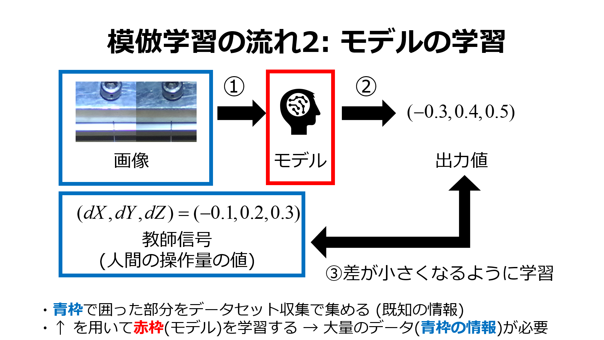
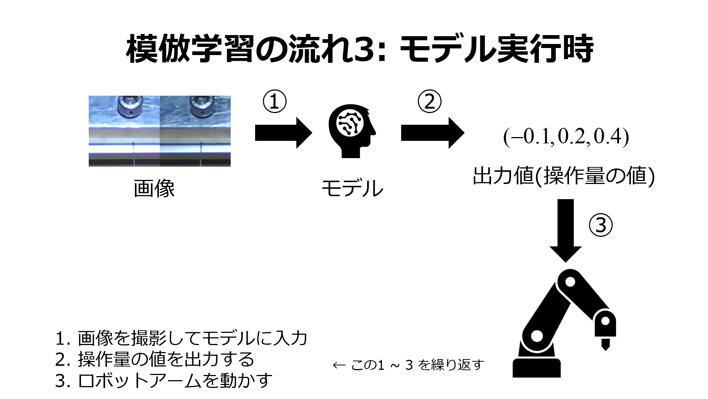
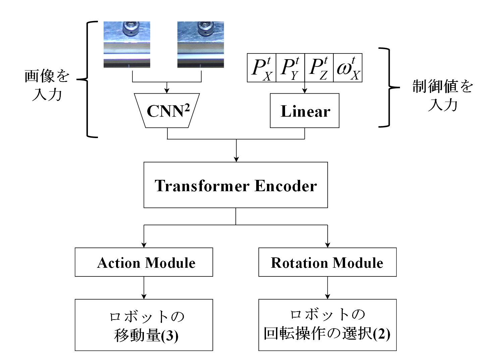

模倣学習によるロボットアームの自律制御
研究背景
ロボットアームを用いてタスクの自動化を行うとき，動作環境が固定されており対象物体の状態が変化しない場合はあらかじめロボットアームの操作量を指定してその通りに動作させることは容易です． しかし，実世界におけるロボットアームのタスクでは動作環境が絶えず変化するため，タスクを完遂するための操作量を事前に指定しておくことは困難です． この問題を解決するために，本研究では模倣学習[1][2]によるロボットアームの自動操作を行うモデルを提案しました． 模倣学習は人間によるタスクの実演から得られる画像や操作量，センサの値などの情報をもとにしてモデルの学習を行う手法となっています．
手法: 模倣学習
模倣学習は人間などの実演によって得られる値を用いて深層学習モデルの学習を行う手法です．
この手法は最初に実演を行う人間などの専門家であるエキスパートによって，与えられたタスクを実行しながらデータの収集を行います．
ここでのデータとは，カメラやセンサなどの外部端末から得られる情報や，エキスパートがどのような操作をしたかを意味する値，操作によって変化した座標や回転方向などの値を指します．
次に，収集したデータを用いて深層学習モデルにおける入力信号から出力信号を決定する関数である方策の学習を行います．
このとき，状態を表す画像やセンサの値などをネットワークの入力，次の時刻の出力値を教師信号としてモデルの学習を行います．

最後に，エキスパートの動作を学習したネットワークであるエージェントが同じタスクを自律的に実行します．

実験: 穴付きボルトへのセーフティワイヤ挿入
模倣学習を用いて本研究では直径2mmの穴にワイヤの挿入を行うタスクを実施しました. [3] このタスクはワイヤ先端の形状や穴の角度の組み合わせが無数にあり, 1mmのずれが失敗につながる難易度の高いタスクとなっています. 実験環境の様子はこのようになっています. ロボットアームの先端にワイヤをつかませており, その先に穴の開いたボルトを設置しています. この画像内には写っていませんが, 上部からワイヤ先端と穴付きボルトが映るように両眼カメラを設置して撮影を行いました.
深層学習モデル
下の図が今回の実験で使用した深層学習モデルです. 二眼カメラから撮影された画像をモデルに入力して特徴を抽出した後, Transformerブロックに入力します. これによって現時刻だけでなく過去の情報も考慮することができます. 
実行結果
学習後の振動学習モデルによるタスクを実行したものが以下の動画です. ワイヤ挿入タスクを81.7%で成功し, 穴の位置が正面を向いてなくても適切に回転行動を出力することができました.
参考文献
[1] A. Hussein, M. M. Gaber, E. Elyan, C. Jayne,“Imitation Learning: A Survey of Learning Methods,” ACM Computing Surveys, Vol. 50 No. 2, pp.1-35, Mar. 2018.
[2] T. Zhang, Z. McCarthy, O. Jow, D. Lee, X. Chen, K. Goldberg, P. Abbeel,“Deep Imitation Learning for Complex Manipulation Tasks from Virtual Reality Teleoperation,
”In: 2018 IEEE International Conference on Robotics Automation(ICRA), pp.5628-5635, 2018.
[3] Y. Niwa, K. Kato, H. Aizawa, Y. Hatta, K. Ito,“Parallax-based Imitation Learning with Human Intervention for Uncertain Insertion Tasks,
”Proceeding of 29th International Workshop on Frontiers of Computer Vision (IW-FCV2023), pp. 271-285, 2023.